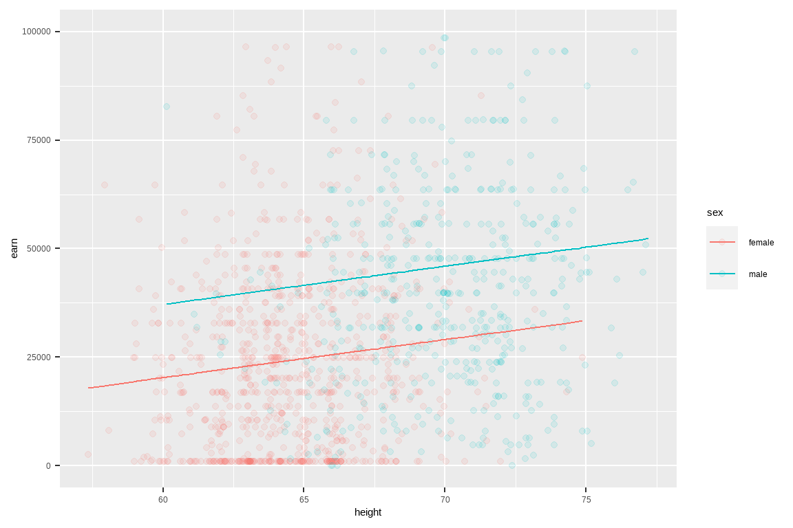

第 18 章 线性回归
线性模型是数据分析中最常用的一种分析方法。最基础的往往最深刻。
18.1 从一个案例开始
这是一份1994年收集1379个对象关于收入、身高、教育水平等信息的数据集。数据在课件首页提供了下载链接。
首先，我们下载后导入数据
18.1.1 缺失值检查
一般情况下，拿到一份数据，首先要了解数据，知道每个变量的含义，
## [1] "earn" "height" "sex" "race" "ed"
## [6] "age"同时检查数据是否有缺失值，这点很重要。在R中 NA（notavailable，不可用）表示缺失值, 比如可以这样检查是否有缺失值。
# 如何检查数据是否有缺失值？
wages %>%
summarise(
earn_na = sum(is.na(earn)),
height_na = sum(is.na(height)),
sex_na = sum(is.na(sex)),
race_na = sum(is.na(race)),
ed_na = sum(is.na(ed)),
age_na = sum(is.na(age))
)程序员都是偷懒的，所以也可以写的简便一点。大家在学习的过程中，也会慢慢的发现tidyverse的函数很贴心，很周到。
当然，也可以用purrr::map()的方法。这部分我会在后面的章节中逐步介绍。

18.2 线性回归模型
长的越高的人挣钱越多？
要回答这个问题，我们先介绍线性模型。顾名思义，就是认为\(x\)和\(y\)之间有线性关系，数学上可以写为
\[ \begin{aligned} y &= \alpha + \beta x + \epsilon \\ \epsilon &\in \text{Normal}(\mu, \sigma) \end{aligned} \]
$ $ 代表误差项，它与\(x\) 无关，且服从正态分布。 建立线性模型，就是要估计这里的系数\(\hat\alpha\)和\(\hat\beta\)，即截距项和斜率项。常用的方法是最小二乘法（ordinary least squares (OLS) regression）： 就是我们估算的\(\hat\alpha\)和\(\hat\beta\), 要使得残差的平方和最小，即\(\sum_i(y_i - \hat y_i)^2\)或者叫\(\sum_i \epsilon_i^2\)最小。当然，数据量很大，手算是不现实的，我们借助R语言代码吧
18.3 使用lm() 函数
用R语言代码(建议大家先?lm看看帮助文档)，
lm参数很多, 但很多我们都用不上，所以我们只关注其中重要的两个参数
lm(y ~ x, data) 是最常用的线性模型函数(lm是linear model的缩写)。参数解释说明
-
formula：指定回归模型的公式，对于简单的线性回归模型
y ~ x. -
~ 符号：代表“预测”，可以读做“y由x预测”。有些学科不同的表述，比如下面都是可以的
-
response ~ explanatory
-
dependent ~ independent -
outcome ~ predictors
-
- data：代表数据框，数据框包含了响应变量和独立变量
在运行lm()之前，先画出身高和收入的散点图(记在我们想干什么，寻找身高和收入的关系)

等不及了，就运行代码吧
这里我们将earn作为响应变量，height为预测变量。lm()返回赋值给mod1. mod1现在是个什么东东呢？ mod1是一个叫lm object或者叫类的东西，
## [1] "coefficients" "residuals" "effects"
## [4] "rank" "fitted.values" "assign"
## [7] "qr" "df.residual" "xlevels"
## [10] "call" "terms" "model"我们打印看看，会发生什么
##
## Call:
## lm(formula = earn ~ height, data = wages)
##
## Coefficients:
## (Intercept) height
## -126523 2387这里有两部分信息。首先第一部分是我们建立的模型；第二部分是R给出了截距（\(\alpha = -126532\)）和斜率（\(\beta = 2387\)）. 也就是说我们建立的线性回归模型是 \[ \hat y = -126532 + 2387 \; x \]
18.4 模型的解释
建立一个lm模型是简单的，然而最重要的是，我们能解释这个模型。
mod1的解释：
对于斜率\(\beta = 2387\)意味着，当一个人的身高是68英寸时，他的预期收入\(earn = -126532 + 2387 \times 68= 35806\) 美元， 换个方式说，身高\(height\)每增加一个1英寸, 收入\(earn\)会增加2387美元。
对于截距\(\alpha = -126532\)，即当身高为0时，期望的收入值-126532。呵呵，人的身高不可能为0，所以这是一种极端的理论情况，现实不可能发生。
wages %>%
ggplot(aes(x = height, y = earn)) +
geom_point(alpha = 0.25) +
geom_smooth(method = "lm", se = FALSE)
18.5 多元线性回归
刚才讨论的单个预测变量height，现在我们增加一个预测变量ed，稍微扩展一下我们的一元线性模型，就是多元回归模型
\[ \begin{aligned} earn &= \alpha + \beta_1 \text{height} + \beta_2 \text{ed} +\epsilon \\ \end{aligned} \]
R语言代码实现也很简单，只需要把变量ed增加在公式的右边
同样，我们打印mod2看看
##
## Call:
## lm(formula = earn ~ height + ed, data = wages)
##
## Coefficients:
## (Intercept) height ed
## -161541 2087 4118大家试着解释下mod2. 😄
18.6 更多模型
lm(earn ~ sex, data = wages)
lm(earn ~ ed, data = wages)
lm(earn ~ age, data = wages)
lm(earn ~ height + sex, data = wages)
lm(earn ~ height + ed, data = wages)
lm(earn ~ height + age, data = wages)
lm(earn ~ height + race, data = wages)
lm(earn ~ height + sex + ed, data = wages)
lm(earn ~ height + sex + age, data = wages)
lm(earn ~ height + sex + race, data = wages)
lm(earn ~ height + ed + age, data = wages)
lm(earn ~ height + ed + race, data = wages)
lm(earn ~ height + age + race, data = wages)
lm(earn ~ height + sex + ed + age, data = wages)
lm(earn ~ height + sex + ed + race, data = wages)
lm(earn ~ height + sex + age + race, data = wages)
lm(earn ~ height + ed + age + race, data = wages)
lm(earn ~ sex + ed + age + race, data = wages)
lm(earn ~ height + sex + ed + age + race, data = wages)18.7 可能遇到的情形
根据同学们的建议，模型中涉及统计知识，留给统计老师讲，我们这里是R语言课，应该讲代码。 因此，这里再介绍几种线性回归中遇到的几种特殊情况
18.7.1 截距项
18.7.2 只有截距
##
## Call:
## lm(formula = earn ~ 1, data = wages)
##
## Coefficients:
## (Intercept)
## 3244618.7.3 分类变量
race变量就是数据框wages的一个分类变量，代表四个不同的种族。用分类变量做回归，本质上是各组之间的进行比较。
wages %>%
ggplot(aes(x = race, y = earn, fill = race)) +
geom_boxplot(position = position_dodge()) +
scale_y_continuous(limits = c(0, 20000))
以分类变量作为解释变量，做线性回归
##
## Call:
## lm(formula = earn ~ race, data = wages)
##
## Coefficients:
## (Intercept) racehispanic raceother
## 28372 -2887 3905
## racewhite
## 4993tidyverse框架下，喜欢数据框的统计结果，因此，可用broom的tidy()函数将模型输出转换为数据框的形式
我们看到输出结果，只有race_hispanic、 race_other和race_white三个系数和Intercept截距，race_black去哪里了呢？
事实上，race变量里有4组，回归时，选择black为基线，hispanic的系数，可以理解为由black切换到hispanic，引起earn收入的变化（效应）
- 对 black 组的估计，
earn = 28372.09 = 28372.09 - 对 hispanic组的估计，
earn = 28372.09 + -2886.79 = 25485.30 - 对 other 组的估计，
earn = 28372.09 + 3905.32 = 32277.41 - 对 white 组的估计，
earn = 28372.09 + 4993.33 = 33365.42
分类变量的线性回归本质上就是方差分析
第 17 章专题讨论方差分析
18.7.4 因子变量
hispanic组的估计最低，适合做基线，因此可以将race转换为因子变量，这样方便调整因子先后顺序
wages_fct <- wages %>%
mutate(race = factor(race, levels = c("hispanic", "white", "black", "other"))) %>%
select(earn, race)
head(wages_fct)wages_fct替换wages，然后建立线性模型
以hispanic组作为基线，各组系数也调整了，但加上截距后，实际值是没有变的。
大家可以用sex变量试试看
18.7.5 一个分类变量和一个连续变量
如果预测变量是一个分类变量和一个连续变量
## (Intercept) height sexmale
## -32479.9 879.4 16874.2height = 879.424当sex保持不变时，height变化引起的earn变化sexmale = 16874.158当height保持不变时，sex变化(female变为male)引起的earn变化
wages %>%
ggplot(aes(x = height, y = earn, color = sex)) +
geom_point(alpha = 0.1) +
geom_line(aes(y = predict(mod5))) +
scale_y_continuous(limits = c(0, 100000))
18.7.6 偷懒的写法
. is shorthand for “everything else.”
lm(earn ~ height + sex + race + ed + age, data = wages)
lm(earn ~ ., data = wages)
lm(earn ~ height + sex + race + ed, data = wages)
lm(earn ~ . - age, data = wages)R 语言很多时候都出现了.，不同的场景，含义是不一样的。我会在后面第 23 章专门讨论这个问题， 这是一个非常重要的问题
18.7.7 交互项
lm(earn ~ height + sex + height:sex, data = wages)
lm(earn ~ height * sex, data = wages)
lm(earn ~ (height + sex)^2, data = wages)## (Intercept) height sexmale
## -12167.0 564.5 -30510.4
## height:sexmale
## 701.4- 对于女性，height增长1个单位，引起earn的增长
564.5102 - 对于男性，height增长1个单位，引起earn的增长
564.5102 + 701.4065 = 1265.92
wages %>%
ggplot(aes(x = height, y = earn, color = sex)) +
geom_point(alpha = 0.1) +
geom_line(aes(y = predict(mod6))) +
scale_y_continuous(limits = c(0, 100000))
18.7.8 predict vs fit
- fitted() , 模型一旦建立，可以使用拟合函数
fitted()返回拟合值，建模和拟合使用的是同一数据 - predict()， 模型建立后，可以用新的数据进行预测，
predict()要求数据框包含新的预测变量，如果没有提供，那么就使用建模时的预测变量进行预测，这种情况下，得出的结果和fitted()就时一回事了。
predict()函数和fitted()函数不同的地方，还在于predict()函数往往带有返回何种类型的选项，可以是具体数值，也可以是分类变量。具体会在第 19 章介绍。
18.7.9 回归和相关的关系
- 相关，比如求两个变量的相关系数
cor(x, y) - 回归，也是探寻自变量和因变量的关系，一般用来预测
回归分析中，如果自变量只有一个\(x\)，也就是模型lm(y~x)，那么回归和相关就有关联了。
比如：计算身高和收入两者的Pearson相关系数的平方
## [1] 0.08503然后看看，身高和收入的线性模型
## [1] 0.08503相关系数的平方 和 线性模型的\(R^2\)是相等的
18.8 延伸阅读
一篇极富思考性和启发性的文章《常见统计检验的本质是线性模型》